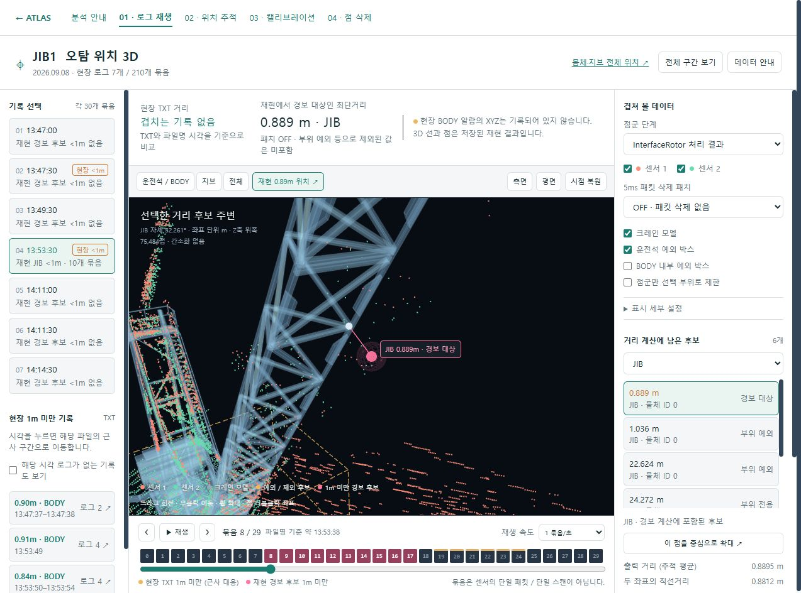
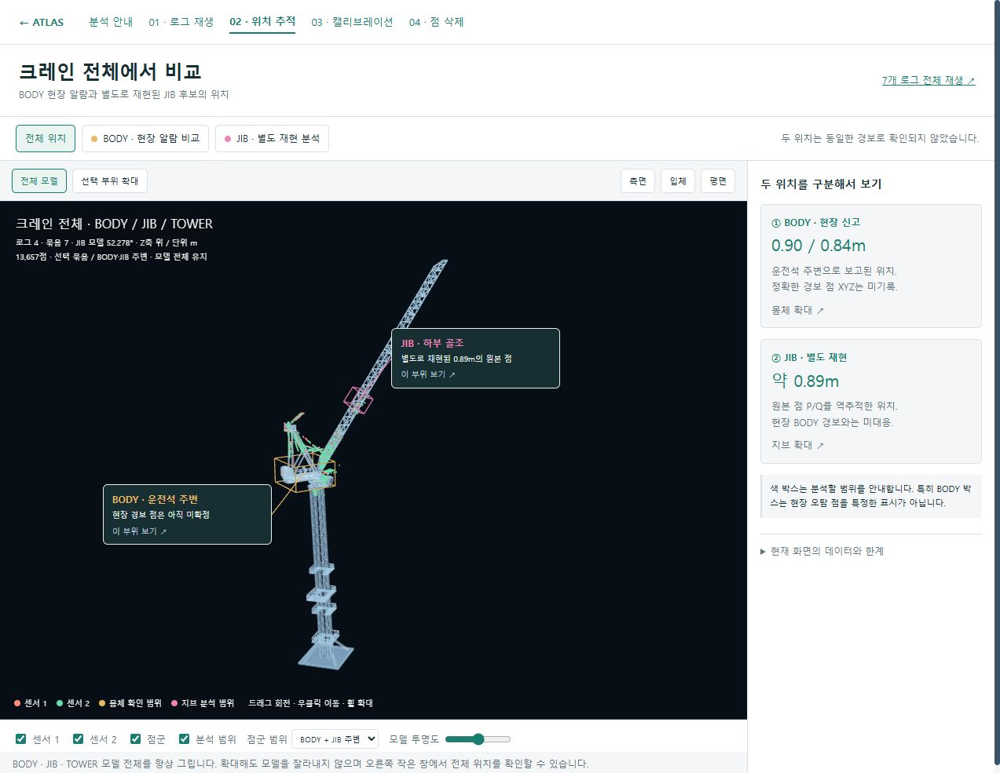
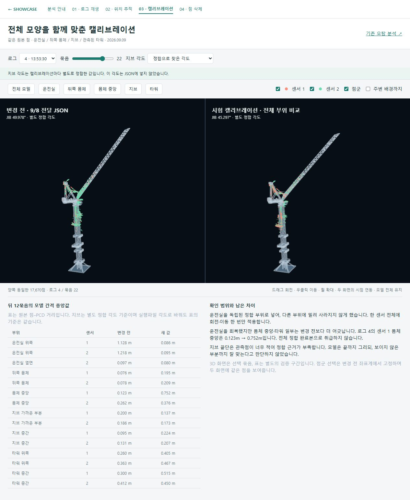
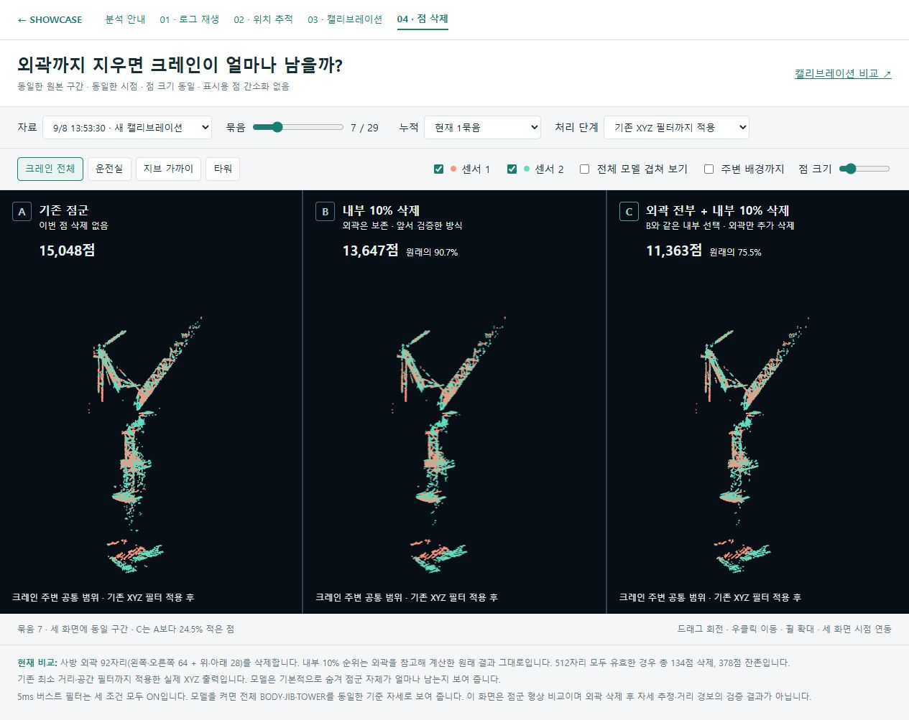

0.9m는 어디서 왔을까?
크레인 라이다의 오탐을 추적하며 만든 네 개의 인터랙티브 분석 화면입니다. 기록된 점군을 돌려 보고, 같은 위치에서 캘리브레이션과 필터 적용 전후를 비교할 수 있습니다.
운전석 주변으로 보고된 BODY 0.84–0.90m와 별도 재현에서 나온 JIB 약 0.89m는 같은 경보로 확인되지 않았습니다. 현장 BODY 경보 점의 정확한 XYZ는 기록에 없습니다.

오탐 로그 재생
7개 로그 · 210개 묶음. 센서별 점군, 처리 단계, 5ms 버스트 필터 ON/OFF와 거리 후보를 함께 봅니다.
구간을 선택해 보기 ↗
몸체·지브 위치 추적
전체 모델에서 두 위치를 구분합니다. 재현된 지브 후보를 원본 센서·패킷·채널까지 따라갑니다.
문제점 P/Q 따라가기 ↗
캘리브레이션 전후 비교
운전실·뒤쪽 몸체·지브·타워를 같은 시점에서 비교합니다. 개선된 부분과 더 어긋난 부분을 모두 남겼습니다.
전체 형상 비교하기 ↗
점 삭제 A/B/C 비교
내부 후보 10% 삭제와 외곽 92자리 삭제. 같은 구간의 점군이 얼마나 남는지 1묶음·5묶음으로 확인합니다.
세 조건 비교하기 ↗이 자료를 읽는 기준
화면에서 조건을 바꾸면 저장된 재현 결과를 선택합니다. 운영 프로그램을 실행하거나 새 센서 데이터를 수집하는 기능은 아닙니다.
버스트 필터는 시간 매칭이 어긋난 패킷을 다루고, 점 삭제 필터는 패킷 안의 고립 후보를 줄입니다. 둘의 역할이 다르며, 모델 자세 오류까지 모두 해결했다는 뜻은 아닙니다.
3D 시각화의 원래 점 좌표·순서·분류를 유지했습니다. 점 삭제 비교도 표시용 간소화 없이 동일 조건을 사용합니다. 얇은 실제 장애물의 검출 보존이나 장시간 현장 안정성을 이 화면만으로 보증하지 않습니다.
자료 범위 · 공개본 구성
2026년 9월 8일 Y JIB1 현장 로그 7개와 9월 9일 분석 결과입니다. 로그 재생·캘리브레이션은 각각 30개 묶음 전체를 선택할 수 있고, 점 삭제 비교는 세 자료 조건 × 30개 묶음을 포함합니다.
네 화면이 점군과 모델을 한 폴더 안에서 공유합니다. 중복 점 좌표는 묶음별로 한 번 저장하고 순서 정보를 무손실 압축했습니다. 현재 선택한 묶음만 불러오므로 첫 진입에 전체 자료를 다운로드하지 않습니다.
개인 이름이 들어간 현장 사진, PC 경로, 원본 통신 로그·PCAP, 실행파일 및 운영 JSON은 공개본에 포함하지 않았습니다. 표시 좌표에 적용되는 비교 변환과 측정 근거는 유지했습니다.